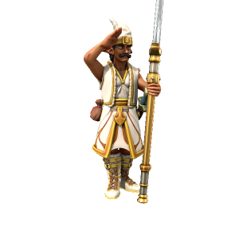

Elf

The ancestry of elves is hotly debated. Elven scholars would say that elves came into being organically, that they are immutable facets of the world in the same way as Fey or Demons. However, in actuality, elves evolved directly from orc. Their faces and builds slimmed, their ears grew, but underneath they are still relatively similar.
🡐 Home